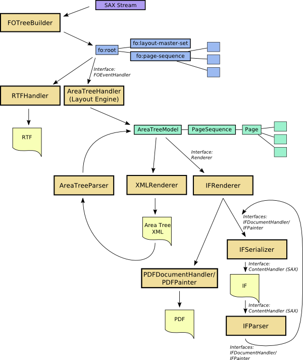

Apache™ FOP
Apache™ XML Graphics
Sub Projects
Search Apache XML Graphics
ApacheCon N. America

Hope to see you there!
ApacheCon Europe
Hope to see you there!


The Apache™ FOP Project
Apache(tm) FOP: Intermediate Format
Translations:
en
en
en
en
en
en
en
en
en
Apache™ FOP: Intermediate Format
Please note that the intermediate formats described here are advanced features and can be ignored by most users of Apache™ FOP.
Introduction
Apache™ FOP now provides two different so-called intermediate formats. The first one (let's call it the area tree XML format) is basically a 1:1 XML representation of FOP's area tree as generated by the layout engine. The area tree is conceptually defined in the XSL-FO specification in chapter 1.1.2. Even though the area tree is mentioned in the XSL-FO specification, this part is not standardized. Therefore, the area tree XML format is a FOP-proprietary XML file format. The area tree XML can be generated through the area tree XML Renderer (the XMLRenderer).
The second intermediate format (which we shall name exactly like this: the intermediate format) is a recent addition which tries to meet a slightly different set of goals. It is highly optimized for speed.
The intermediate format can be used to generate intermediate documents that are modified before they are finally rendered to their ultimate output format. Modifications include adjusting and changing trait values, adding or modifying area objects, inserting prefabricated pages, overlays, imposition (n-up, rotation, scaling etc.). Multiple IF files can be combined to a single output file.
Which Intermediate Format to choose?
Both formats have their use cases, so the choice you will make will depend on your particular situation. Here is a list of strengths and use cases for both formats:
Area Tree XML (AT XML)
-
1:1 representation of FOP's area tree in XML.
-
Contains more structure information than the new intermediate format.
-
Used in FOP's layout engine test suite for regression testing.
Intermediate Format (IF)
More technical information about the two formats can be found on the FOP Wiki.
Architectural Overview

Usage of the Area Tree XML format (AT XML)
As already mentioned, the area tree XML format is generated by using the XMLRenderer (MIME type: application/X-fop-areatree). So, you basically set the right MIME type for the output format and process your FO files as if you would create a PDF file.
However, there is an important detail to consider: The various Renderers don't all use the same font sources. To be able to create the right area tree for the ultimate output format, you need to create the area tree XML file using the right font setup. This is achieved by telling the XMLRenderer to mimic another renderer. This is done by calling the XMLRenderer's mimicRenderer() method with an instance of the ultimate target renderer as the single parameter. This has a consequence: An area tree XML file rendered with the Java2DRenderer may not look as expected when it was actually generated for the PDF renderer. For renderers that use the same font setup, this restriction does not apply (PDF and PS, for example). Generating the area tree XML format file is the first step.
The second step is to reparse the file using the AreaTreeParser which is found in the org.apache.fop.area package. The pages retrieved from the area tree XML file are added to an AreaTreeModel instance from where they are normally rendered using one of the available Renderer implementations. You can find examples for the area tree XML processing in the http://svn.apache.org/viewvc/xmlgraphics/fop/trunk/fop/examples/embedding/java/embedding/intermediate/ directory in the FOP distribution.
The basic pattern to parse the area tree XML format looks like this:
FopFactory fopFactory = FopFactory.newInstance(new File(".").toURI());
// Setup output
OutputStream out = new java.io.FileOutputStream(pdffile);
out = new java.io.BufferedOutputStream(out);
try {
//Setup fonts and user agent
FontInfo fontInfo = new FontInfo();
FOUserAgent userAgent = fopFactory.newFOUserAgent();
//Construct the AreaTreeModel that will received the individual pages
AreaTreeModel treeModel = new RenderPagesModel(userAgent,
MimeConstants.MIME_PDF, fontInfo, out);
//Parse the area tree file into the area tree
AreaTreeParser parser = new AreaTreeParser();
Source src = new StreamSource(myIFFile);
parser.parse(src, treeModel, userAgent);
//Signal the end of the processing. The renderer can finalize the target document.
treeModel.endDocument();
} finally {
out.close();
}
This example simply reads an area tree file and renders it to a PDF file. Please note, that in normal FOP operation you're shielded from having to instantiate the FontInfo object yourself. This is normally a task of the AreaTreeHandler which is not present in this scenario. The same applies to the AreaTreeModel instance, in this case an instance of a subclass called RenderPagesModel. RenderPagesModel is ideal in this case as it has very little overhead processing the individual pages. An important line in the example is the call to endDocument() on the AreaTreeModel. This lets the Renderer know that the processing is now finished.
The area tree XML format can also be used from the command-line by using the "-atin" parameter for specifying the area tree XML as input file. You can also specify a "mimic renderer" by inserting a MIME type between "-at" and the output file.
Concatenating Documents
This initial example is obviously not very useful. It would be faster to create the PDF file directly. As the ExampleConcat.java example shows you can easily parse multiple area tree files in a row and add the parsed pages to the same AreaTreeModel instance which essentially concatenates all the input document to one single output document.
Modifying Documents
One of the most important use cases for this format is obviously modifying the area tree XML before finally rendering it to the target format. You can easily use XSLT to process the AT XML file according to your needs. Please note, that we will currently not formally describe the area tree XML format. You need to have a good understanding its structure so you don't create any non-parseable files. We may add an XML Schema and more detailed documentation at a later time. You're invited to help us with that.
The area tree XML format is sensitive to changes in whitespace. If you're not careful, the modified file may not render correctly.
Advanced Use
The generation of the area tree format as well as it parsing process has been designed to allow for maximum flexibility and optimization. Please note that you can call setTransformerHandler() on XMLRenderer to give the XMLRenderer your own TransformerHandler instance in case you would like to do custom serialization (to a W3C DOM, for example) and/or to directly modify the area tree using XSLT. The AreaTreeParser on the other side allows you to retrieve a ContentHandler instance where you can manually send SAX events to to start the parsing process (see getContentHandler()).
Usage of the Intermediate Format (IF)
The Intermediate Format (IF) is generated by the IFSerializer (MIME type: application/X-fop-intermediate-format). So, you basically set the right MIME type for the output format and process your FO files as if you would create a PDF file.
The IFSerializer is an implementation of the IFDocumentHandler and IFPainter interfaces. The IFRenderer class is responsible for converting FOP's area tree into calls against these two interfaces.
-
IFDocumentHandler: This interface is used on the document-level and defines the overall structure of the Intermediate Format.
-
IFPainter: This interface is used to generate graphical page content like text, images and borders.
As with the AT XML, there is an important detail to consider: The various output implementations don't all use the same font sources. To be able to create the right IF for the ultimate output file, you need to create the IF file using the right font setup. This is achieved by telling the IFRenderer (responsible for converting the area tree into calls to the IFDocumentHandler and IFPainter interfaces) to mimic another renderer. This is done by calling the IFSerializer's mimicDocumentHandler() method with an instance of the ultimate target document handler as the single parameter. This has a consequence: An IF file rendered with the Java2DDocumentHandler may not look as expected when it was actually generated for the PDF implementation. For implementations that use the same font setup, this restriction does not apply (PDF and PS, for example). Generating the Intermediate Format file is the first step.
The second step is to reparse the file using the IFParser which is found in the org.apache.fop.render.intermediate package. The IFParser simply takes an IFDocumentHandler instance against which it generates the appropriate calls. The IFParser is implemented as a SAX ContentHandler so you're free to choose the method for post-processing the IF file(s). You can use XSLT or write SAX- or DOM-based code to manipulate the contents. You can find examples for the Intermediate Format processing in the http://svn.apache.org/viewvc/xmlgraphics/fop/trunk/fop/examples/embedding/java/embedding/intermediate/ directory in the FOP distribution.
The basic pattern to parse the intermediate format looks like this:
FopFactory fopFactory = FopFactory.newInstance(new File(".").toURI());
// Setup output
OutputStream out = new java.io.FileOutputStream(pdffile);
out = new java.io.BufferedOutputStream(out);
try {
//Setup user agent
FOUserAgent userAgent = fopFactory.newFOUserAgent();
//Create IFDocumentHandler instance
IFDocumentHandler targetHandler;
String mime = MimeConstants.MIME_PDF;
targetHandler = fopFactory.getRendererFactory().createDocumentHandler(
userAgent, mime);
//Setup fonts
IFUtil.setupFonts(targetHandler);
//Tell the target handler where to write the PDF to
targetHandler.setResult(new StreamResult(pdffile));
//Parse the IF file
IFParser parser = new IFParser();
Source src = new StreamSource(myIFFile);
parser.parse(src, targetHandler, userAgent);
} finally {
out.close();
}
This example simply reads an intermediate file and renders it to a PDF file. Here IFParser.parse() is used, but you can also just get a SAX ContentHandler by using the IFParser.getContentHandler() method.
Concatenating Documents
This initial example is obviously not very useful. It would be faster to create the PDF file directly (without the intermediate step). As the ExampleConcat.java example shows you can easily parse multiple intermediate files in a row and use the IFConcatenator class to concatenate page sequences from multiple source files to a single output file. This particular example does the concatenation on the level of the IFDocumentHandler interface. You could also do this in XSLT or using SAX on the XML level. Whatever suits your process best.
Modifying Documents
One of the most important use cases for this format is obviously modifying the intermediate format before finally rendering it to the target format. You can easily use XSLT to process the IF file according to your needs.
There is an XML Schema (located under src/documentation/intermediate-format-ng) that helps you verify that your modified content is correct.
For certain output formats there's a caveat: Formats like AFP and PCL do not support arbitrary transformations on the IF's "viewport" and "g" elements. Possible are only rotations in 90 degree steps and translations.
Advanced Use
The generation of the intermediate format as well as it parsing process has been designed to allow for maximum flexibility and optimization. So rather than just passing in a StreamResult to IFSerializer's setResult() method, you can also use a SAXResult or a DOMResult. And as you've already seen, the IFParser on the other side allows you to retrieve a ContentHandler instance where you can manually send SAX events to start the parsing process (see getContentHandler()).